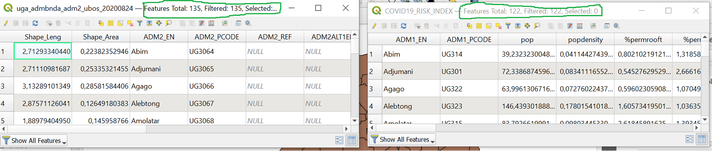
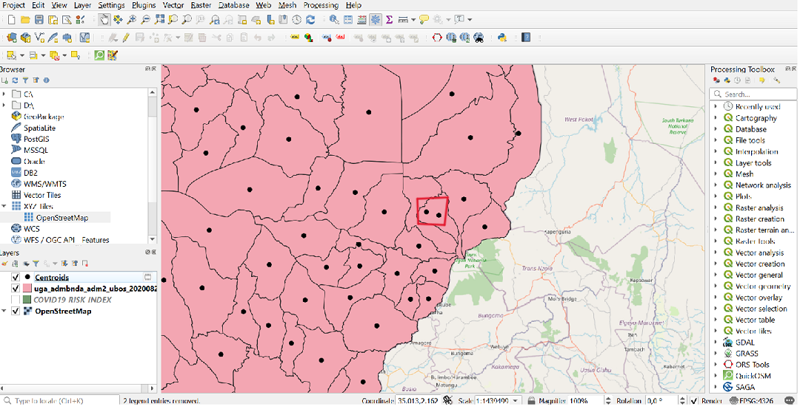
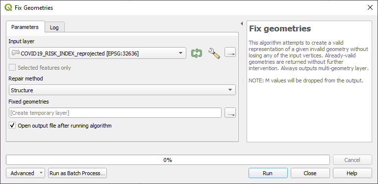
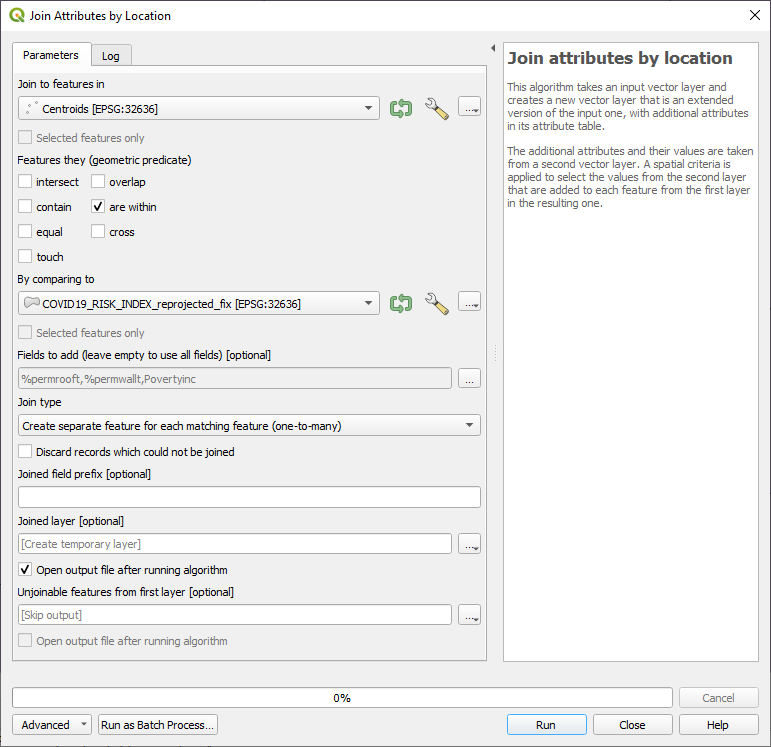
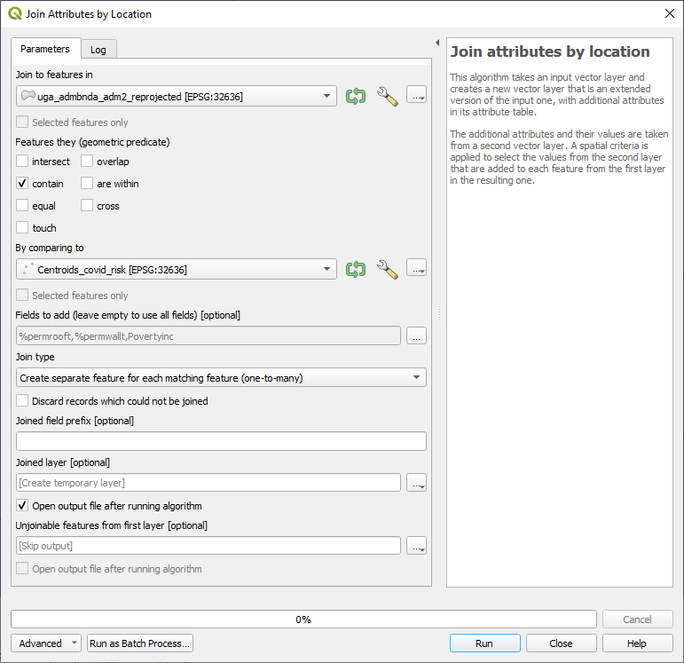

Exercise 1: Part 1: Calculate vulnerability index#
Characteristics of the exercise#
Aim of the exercise
We want to create an overview of different vulnerability indicators. Using a Covid-19 risk indicators dataset, we take % permanent wall type, % permanent roof type and poverty incidence. Using Uganda population statistics, we calculate the % of under fives and % of elderly. By combining the data, we are now able to visualise the areas in Uganda that are most vulnerable.
Type of trainings exercise:
This exercise can be used in online and presence training.
It can be done as a follow-along exercise or individually as a self-study.
Focus group (GIS-Knowledge Level)
These skills are relevant for
Estimated time demand for the exercise.
Relevant Wiki Articles
Instructions for the trainers#
Trainers Corner
Prepare the training
Take the time to familiarise yourself with the exercise and the provided material.
Prepare a white-board. It can be either a physical whiteboard, a flip-chart, or a digital whiteboard (e.g. Miro board) where the participants can add their findings and questions.
Before starting the exercise, make sure everybody has installed QGIS and has downloaded and unzipped the data folder.
Check out How to do trainings? for some general tips on training conduction
Conduct the training
Introduction:
Introduce the idea and aim of the exercise.
Provide the download link and make sure everybody has unzipped the folder before beginning the tasks.
Follow-along:
Show and explain each step yourself at least twice and slow enough so everybody can see what you are doing, and follow along in their own QGIS-project.
Make sure that everybody is following along and doing the steps themselves by periodically asking if anybody needs help or if everybody is still following.
Be open and patient to every question or problem that might come up. Your participants are essentially multitasking by paying attention to your instructions and orienting themselves in their own QGIS-project.
Wrap up:
Leave time for any issues or questions concerning the tasks at the end of the exercise.
Leave some time for open questions.
Data#
Download all datasets and save the folder on your computer and unzip the file. The zip folder includes:
uga_admbnda_adm2_ubos_20200824.shp: Uganda district boundaries (Admin level 2)COVID19_RISK_INDEX.shp: Covid-19 risk indicators
Hint
All files still have their original names. However, feel free to modify their names if necessary to identify them more easily.
Task#
This first part of the exercise will prepare the data for subsequent non-spatial geodataprocessing, such as working with the attribute table. To calculate the vulnerability index, we will join all the relevant data using spatial geodataprocessing into a single vector layer.
Load the Uganda district boundaries (admin level 2) (
uga_admbnda_adm2_ubos_20200824.shp), as well as population statistics (uga_admpop_adm2_2020proj_1y.csv) and Covid-19 risk indicators (COVID19_RISK_INDEX.shp) into QGIS.Make sure to reproject the dataset using the district boundaries and the Covid-19 risk indicators dataset into UTM zone 36N. Use the tool
Reproject layerfor this process. See the Wiki entry on projections for further information.
Attention
Before you start doing any GIS operations, always explore the data. Always check if the projections of the different layers are the same.
Hint
The projected coordinate system for Uganda is EPSG:32636 WGS 84 / UTM zone 36N. If you are looking for a suitable projected coordinate system for any region on earth, you can find a good example on epsg.io.
We can see that the polygons are different in shape and amount! It is likely that the risk data is using an older version of the admin boundaries. This is an issue we need to resolve in order to work properly with the data.
{kind=link}

Screenshot of different sizes of the attribute tables#
We will use the following solution for this problem:
We can take the closest district centroid (from the dataset with the most to the dataset with the fewest records). This is the solution we will use for this exercise as the difference between the two datasets is not drastically.
Calculate the
Centroidsfor the dataset containing the most elements, which are the district boundaries. You can find the tool underVector–>Geometry Tools–>Centroids. See the Wiki entry on Geoprocessing for further information.Edit the points so they are inside the correct polygons. This is necessary because the centroid of a polygon may fall outside of it when it has an unusual shape. To move a centroid that is outside its boundaries into the district boundaries, first activate the
Toggle editing modebutton, which can be found by clicking on while activating the centroid layer. Then, select the
while activating the centroid layer. Then, select the Move Featuretool. Search for the centroid that is outside its boundaries and move it to the appropriate district boundary. Save the changes and end the editing mode.
{kind=link}

The black points represent the centroids of the features of the input layer. The red circle indicates the centroid that requires editing.#
There is an issue that is produced when joining the datasets, but it can be solved by using the
Fix geometriestool on the Covid-19 risk dataset.
{kind=link}

Screenshot on how to fix the geometries.#
Use the tool
Join attributes by locationto join the Covid-19 risk polygons onto the centroids. As a spatial relationship selectwithinand select the columns%permrooft,%permwalltandPovertyincas the fields that should be added. See the Wiki entry on spatial joins for further information.
{kind=link}

Screenshot of Join attribute by location operation.#
Use the tool
Join attributes by locationagain to join the previously enriched points onto the Uganda district boundaries. Now select “contain” as the spatial relationship and again select the same three columns for joining.
{kind=link}

Screenshot of the second Join attribute by location operation.#
The next steps of the vulnerability index calculation will be completed in the second part of this exercise, the Non-spatial Geodataprocessing section. Please refer to the provided link for this exercise.